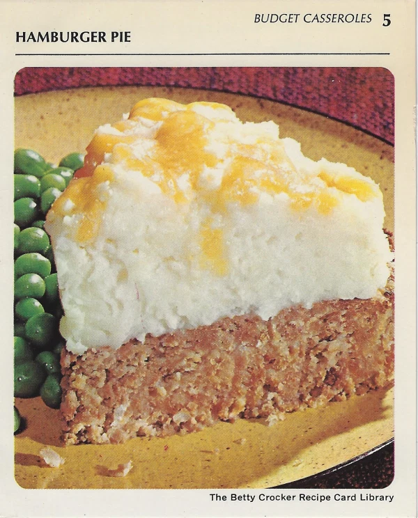

Hamburger Pie

Ingredients
- 1 pound ground beef
- 1 egg
- 1 egg
- 1 teaspoon sal
- 1/8 teaspoon pepper
- 1 tablespoon instant minced onion
- 3/4 cup catsup
- 1 cup milk
- 1/2 cup shredded sharp Cheddar cheese (2 ounces)
Preparation
- Heat oven to 350°. Mix meat, 1 1/3 cups of the instant puffs (dry), the egg, salt pepper, onion,
catsup and milk. Spread in ungreased pie pan, 9×1 1/2 inches. Bake uncovered 35 to 40 minutes.
- Prepare remaining instant puffs as directed on package for 4 servings. Top baked meat loaf
with mashed potatoes; sprinkle with cheese. Bake 3 to 4 minutes longer or until cheese melts.